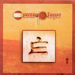

| Artist: | Ozone Player |
| Title: | E |
| Label: | Visual Power VP004 |
| Length(s): | 49 minutes |
| Year(s) of release: | 2002 |
| Month of review: | [03/2003] |
| 1) | My Name Is Bond...Jeeves Bond | 6.44 |
| 2) | The Wobbling Wardrobe | 5.23 |
| 3) | Ollism | 3.07 |
| 4) | The Runner | 6.18 |
| 5) | Broken Code | 4.13 |
| 6) | Light Music For Small Masses | 3.00 |
| 7) | Platonaut | 4.18 |
| 8) | Inzekt Danz | 5.12 |
| 9) | Re-ollism | 3.59 |
| 10) | Saurus | 6.47 |